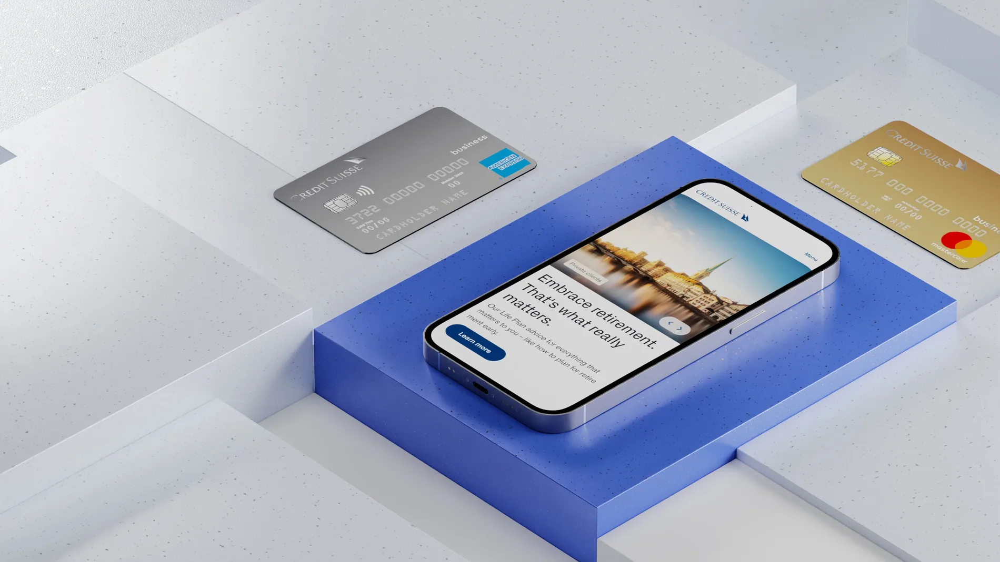
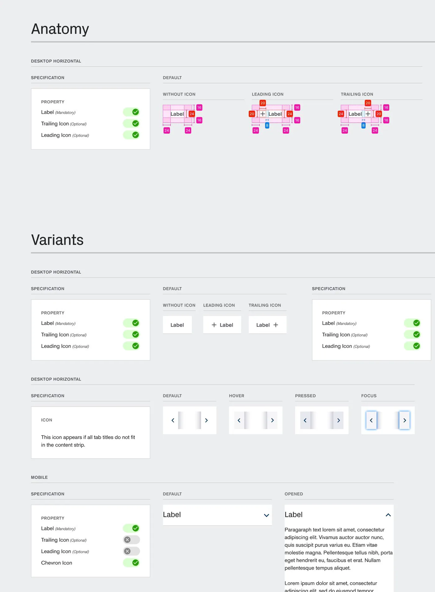
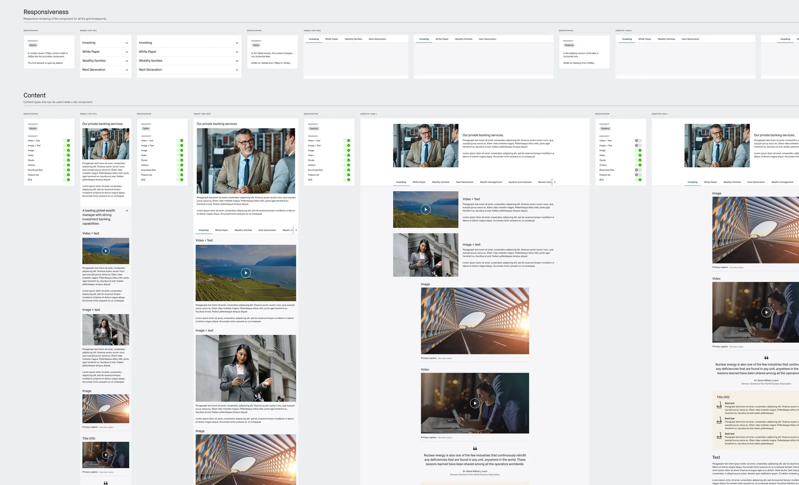
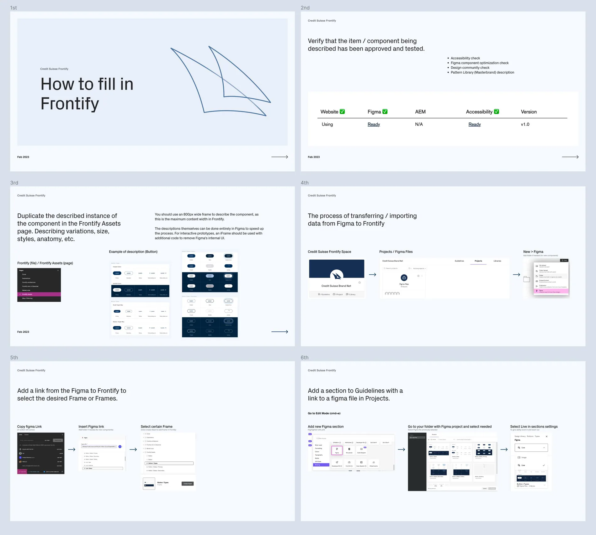
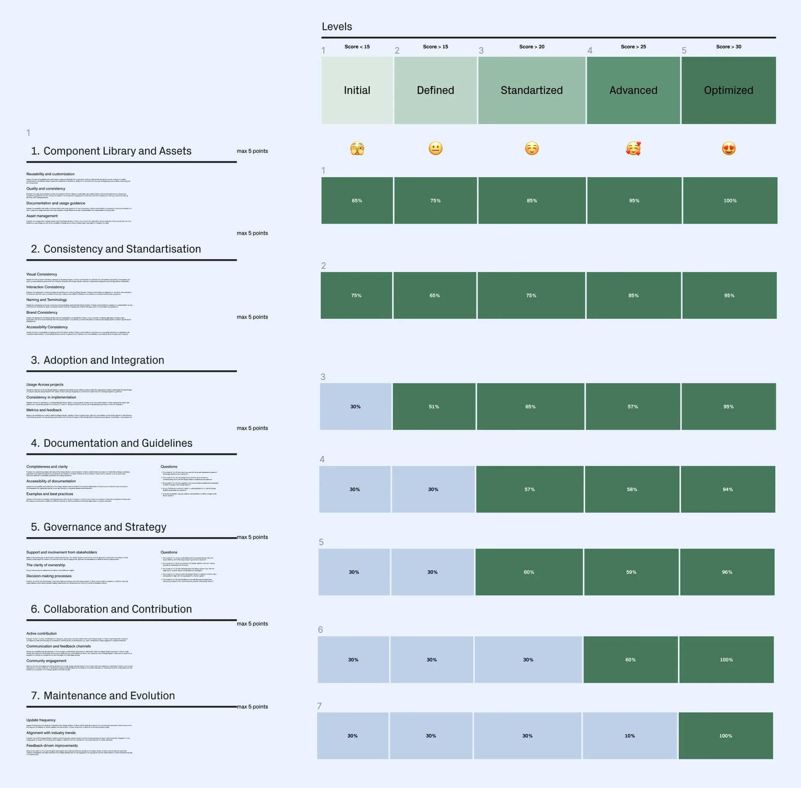
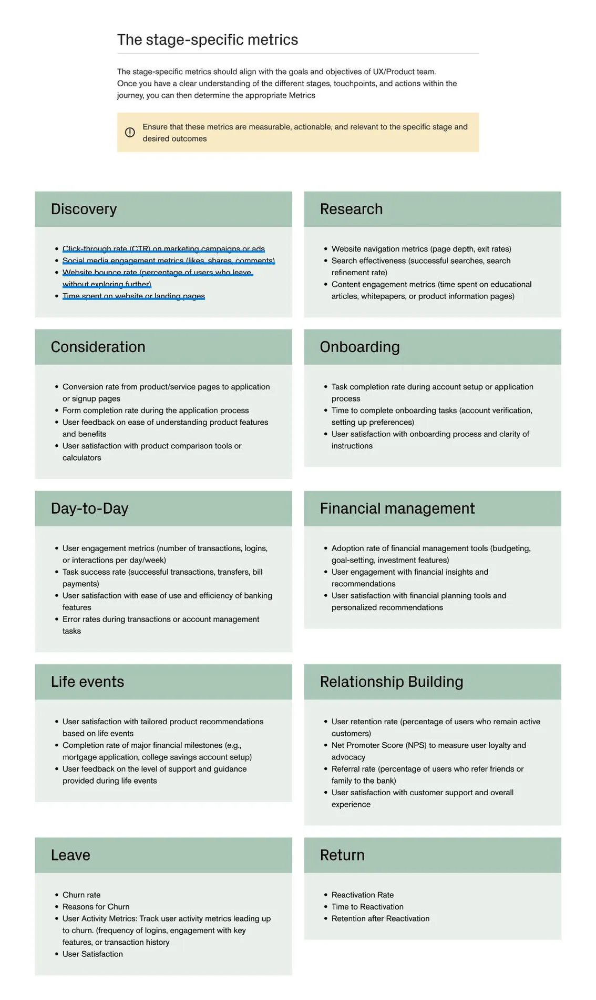
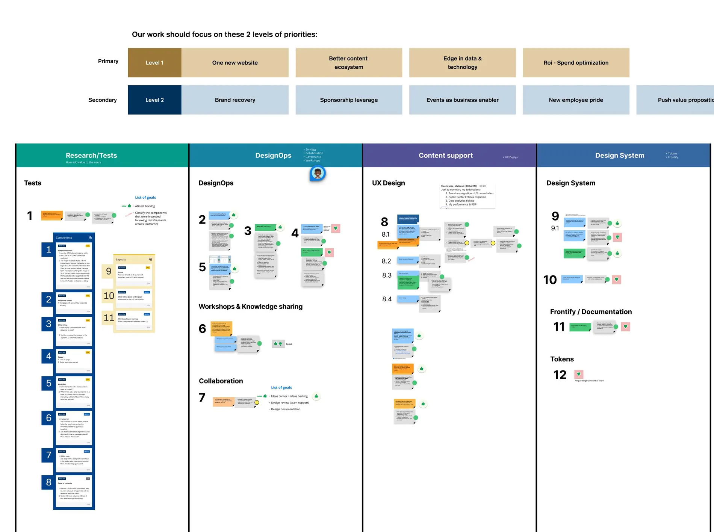
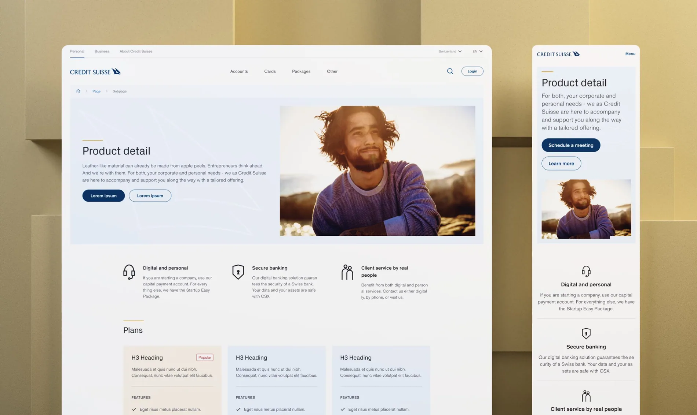
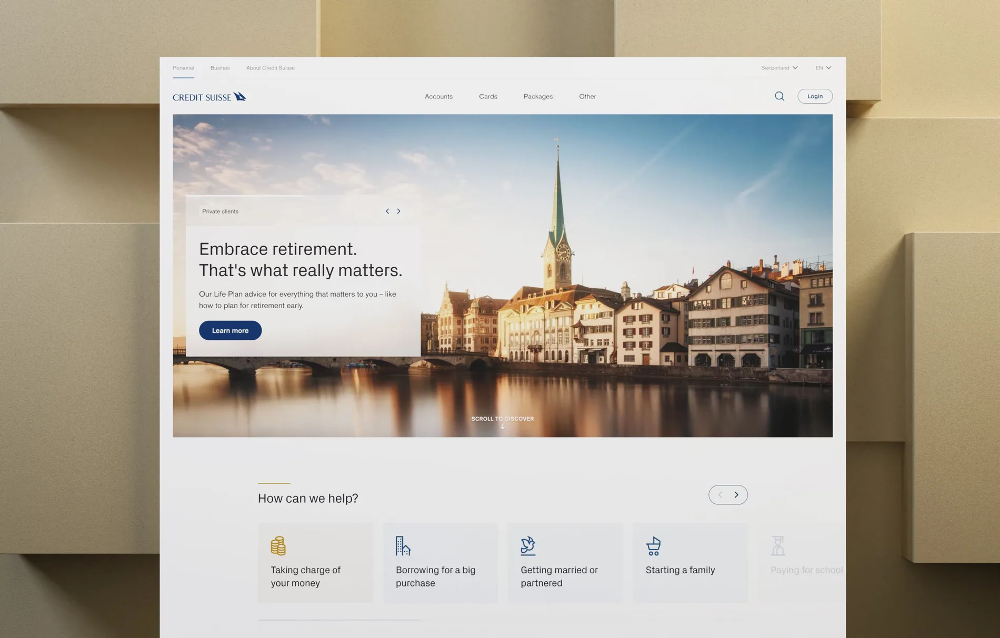

Credit Suisse
A system that brings teams into alignment.
SCROLL TO EXPLORE
Building consistency across teams, components and brand expression.
Enhancing user experience, streamlining design processes and bringing a new visual language into a reusable design system.
- Project
- Credit Suisse
- Role / disciplines
- Design systems / DesignOps
- Period
- 2023
A new visual language, made reusable.
Components, specifications and documentation aligned with the updated brand.



I worked on creating new components as well as redesigning existing components to align them with the brand's fresh visual language. Working closely with the design team and brand stakeholders, we developed visually cohesive components that embodied the essence of the brand. In addition, I created specifications that ensure consistent implementation of these components across platforms, allowing us to create a consistent user experience for users.
To streamline the component documentation process, I leveraged the capabilities of Frontify. By utilizing Frontify I described and documented components, including design guidelines, usage instructions, and visual examples. This centralized approach enabled seamless collaboration among the design team, developers, and stakeholders, ensuring clarity and consistency in component usage throughout the organization. Direct connection from Figma to Frontify
Design maturity you can actually measure.
Measuring adoption and creating a flexible customer-journey framework.



Metrics played a crucial role in measuring our activities and progress. By establishing key performance indicators, we were able to track the impact of our initiatives and identify areas for improvement within the design system. Throughout the project, I actively collaborated with stakeholders, designers, and crossfunctional teams, fostering a culture of transparency, open communication, and knowledge sharing.
One of the notable achievements of the project was the creation of a flexible framework for the creation of customer journey maps (CJM) for the Marketing department. This is a simple but convenient and flexible framework for creating a customer journey, where a marketer can customize phases or swap them if needed, as well as enter all the necessary data and numbers.
Results built through collaboration.
Business outcomes, productivity and consistency.

